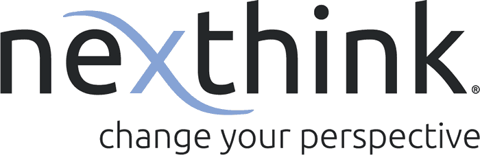
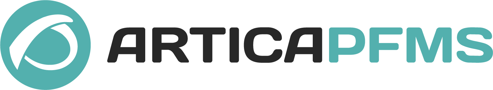

Eulerian Technologies: Ingeniero DevOps
17/06/2017 - Actualmente
- Desarrollo de scripts de integración entre diferentes sistemas
- Administración de sistemas en alta disponibilidad HA
- Diagnosticó en páginas web comerciales de los clientes españoles de la empresa
- Liderazgo y gestión de proyectos técnicos
Excem Grupo 1971: Administrador de sistemas
01/03/2017 - 14/06/2017
- Soporte técnico de sistemas en alta disponibilidad
- Desarrollo de scripts de monitorización
- Mantenimientos programados in-situ
- Monitorización de toda la arquitectura

Nexthink: Ingeniero de Soporte y sistemas
01/02/2016 - 31/12/2016
- Soporte técnico de sistemas en alta disponibilidad
- Análisis de logs
- Formación del equipo de operaciones en sitemas operativos Linux
- Desarrollo de script recolector de logs usado para el diagnostico de problemas
Grupo Sia: Ingeniero de soporte y sistemas
01/05/2015 - 30/09/2015
- Soporte técnico de sistemas en alta disponibilidad
- Análisis de logs

Artica ST: Técnico de sistemas y soporte
01/02/2014 - 30/03/2015
- Soporte técnico de sistemas en alta disponibilidad
- Desarrollo de plugins de monitorización
- Creación de artículos técnicos para el blog
- Análisis de logs